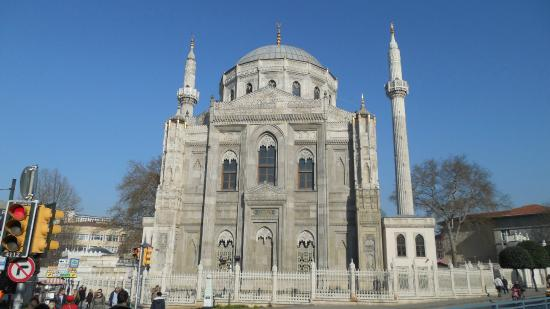
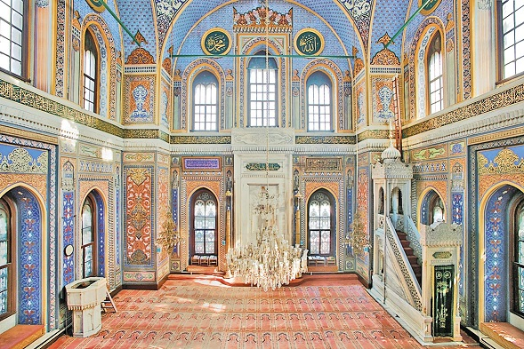
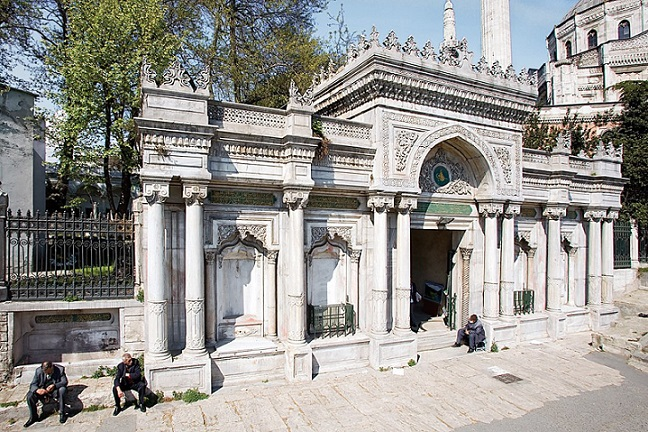

Pertevniyal Valide Sultan Camii

AçıklamaII. Mahmud’un eşi ve Sultan Abdülaziz’in annesi Pertevniyal Vâlide Sultan tarafından Aksaray Meydanı’nda yaptırılan külliye cami, mektep, türbe, türbedar odası, kütüphane, muvakkithâne, karakol, altı adet çeşme ve yedi adet dükkândan oluşmaktadır. Yirmi dört evrak halinde Topkapı Sarayı Arşivi’nde bulunan külliyenin inşaat defterleri 1867-1871 yıllarına aittir. Buradaki bilgilere göre bina emini Hüseyin Bey, yardımcısı Hüsrev Bey, kâtibi Sâmi Efendi, vakıf idarecisi Bogos Bey (daha sonra Mihran Bey), Kalfa (mimarı) Sarkis (Balyan) Bey, yamağı kardeşi Agop ve Bedros beyler, mermere ve sıva üstüne işlenecek motifleri çizen Oseb Bey ile yamağı Agop (Balyan) Bey’dir. Böylece bazı kaynaklarda mimar olarak İtalyan Montani Efendi’nin gösterilmesinin doğru olmadığı ortaya çıkmaktadır. Aksaray’da yanmış olan Kâtib Camii’nin arsası çevresindeki alanın satın alınmasıyla yapının ihtiyacına uygun boyuta getirilmiştir. İki yıl süren istimlâk işleri sonunda toplam 753.865 kuruş harcanmıştır. Serkis Kalfa tasarımını ve çizimini Pertevniyal Vâlide Sultan’ın, “Ortaköy Camii kadar olsun” şeklindeki emrine göre düzenlemiş, cami harimini Ortaköy Camii’nin harimi kadar yapmış, fakat avlusunu ondan daha geniş tutmuştur. Müneccimbaşından gelen bir tezkerede, 20 Ramazan 1285 (4 Ocak 1869) Pazartesi günü dördü on beş dakika geçe eşref-i sâat olduğu ve cami temelinin o saatte atılması lâzım geldiğinin belirtilmesi üzerine hazırlıklar buna göre yapılmıştır. Külliyenin inşaatı 28 Cemâziyelâhir 1285’ten (16 Ekim 1868) 16 Şevval 1287’ye (9 Ocak 1871) kadar 121 hafta sürmüştür. Cami, türbe, sofa ve odalarla karşısında karakol ve duhancı, kaymakçı, sütçü, çörekçi, kasap, helvacı, bakkal olmak üzere yedi adet dükkânın inşaatı için toplam 3.980.896,25 kuruş harcanmış ve bu para Pertevniyal Vâlide Sultan’ın vakıf gelirleriyle ödenmiştir.Cami avlusuna doğu, batı ve kuzeyden olmak üzere üç kapı ile ulaşılır. Kuzeydeki kapı oldukça sadedir. Doğudaki kapının iki yanı oval biçiminde düzenlenmiş olup nişlerle hareketlendirilmiştir. Basık kemerli kapı açıklığının üzerinde üç satır halinde altı beyitlik bir kitâbe ile üstünde tuğra yer almaktadır. Batıdaki avlu kapısı âbidevî olarak tasarlanmış, mermer kabartmalı lotus ve rûmîlerden oluşan bitkisel süslemeli alınlığının ortasına Sultan Abdülaziz’in tuğrası yerleştirilmiştir. Bir kaide üzerine oturan, alttan 1 m. yüksekliğe kadar kabartma motiflerle işlenmiş, iyon tarzına benzer başlıklara sahip ikiz sütunlarla taşınan sivri kemerin konturları ince bir antrolak kuşağı ile çevrelenmiştir. Kemer koltukları bitkisel süslemelerle dolgulanmış, bunun üzerine mukarnas frizi yapılmış ve iri palmetlerden oluşan bir tepelikle kapı taçlandırılmıştır. Arşiv belgelerinde yer almamasına rağmen bazı araştırmacılar bu kapının mimar Giorgio Cociffi’ye ait olabileceğini ileri sürer (Can, s. 55). Avlu kapılarından doğu ve batı yönündekilerde şair Nüzhet’e ait, 1288 (1871) tarihini veren altışar beyitlik kitâbe Hattat Abdülfettah Efendi tarafından ta‘lik hatla yazılmıştır. Diğer avlu kapısı üzerindeki kitâbede Hattat Mehmed Rifat’ın 1288’de (1871) celî sülüsle yazdığı, “Selâmün aleyküm tıbtüm fe’dhulûhâ hâlidîn” âyeti mevcuttur. Eklektik (karma) üslûpta inşa edilmiş olan cami, son devir Osmanlı camilerinde sıkça karşılaşılan dört büyük ayak üzerine oturmuş dört büyük kemerli ve tek kubbeli bir yapıdır. Ancak burada büyük yay kemerler dıştan belirtilmemiş, kasnak da çok yüksek tutulmuştur. Onaltıgen kasnakta geometrik geçmeler, bunun altında bir sıra mukarnaslı stalaktitli saçak ve her cephede dev gotik tarzda birer pencere vardır. Caminin köşelerinde öne çıkarılan büyük ayaklar birer kule gibi yükseltilmiş, cepheler de bu kulelerin arasına alınarak mihrap duvarında altta iki, üstte üç, diğer iki duvarda altta ve üstte üçer adet sivri kemerli gotik pencere açılmıştır. Cephe üstte üçgen bir alınlıkla taçlandırılmış ve aynı alınlıklar daha küçük ölçüde alt kat orta pencerelerinin üzerine de yerleştirilmiştir. İki yanda yine çift sıralı düzenlenen iri sathî nişler klasik dönem izleri olarak cepheleri hareketlendirmiştir. Benzer klasik öğeler köşe kulelerinde daha yoğun kullanılmıştır. Hem cepheleri taçlandıran üçgen alınlıklar hem de pencere üzerindeki üçgen alınlıklarda iri rûmî palmet süslemeler vardır; bu süslemeli alınlıklar orta katta iki sıra, alt katta tek sıra mukarnas dizisiyle sınırlanmıştır. Alınlıkların hemen altında birer kartuş içinde celî sülüsle, “Mâşallah lâ kuvvete illâ billâh” yazılıdır. Neo-gotik tarzdaki pencerelerin sivri kemer dolguları mermerden işlenmiş, dantel gibi ince bir işçiliğe sahip dökme şebekeleri ise salbekli şemse motifinden ilham alınıp geliştirilen klasik Osmanlı tarzında rûmîli palmetli bir çerçevenin ikili olarak kullanılması ile oluşturulmuştur. 
Dışa taşkın düzenlenen, cümle kapısının yer aldığı yatık dikdörtgen planlı sahanlıktan önce kareye yakın planda giriş holüne, buradan sağlı sollu koridorlarla kasr-ı hümâyunun haremlik-selâmlık kısımlarına geçilir. Cami mekânından bağımsız olan bu bölümlerden sağdaki kütüphane olarak kullanılmışsa da daha sonra buradaki kitaplar Süleymaniye Kütüphanesi’ne nakledilmiştir (bk. PERTEVNİYAL VÂLİDE SULTAN KÜTÜPHANESİ). Soldaki bölüm ise dışarıdan ayrı bir kapıyla girilebilen, üst kattaki vâlide sultan dairesine çıkan merdivenlerin bulunduğu kısımdır. Eksende yer alan ikinci bir kapıdan sonra harime üçlü düzende açılan bir ara bölüme ulaşılır. İki yanı dikdörtgen planlı birer mekân şeklinde düzenlenen bu bölümün üst katı da yine üçlü düzende birer mahfil gibi harime açılır. Harimi örten 10 m. çapındaki pandantifli kubbe yapıya göre küçük olmakla beraber dört yöndeki iri kemerlerden dolayı 14 m. genişliğinde bir mekân elde edilmiştir. Caminin içi gözü yoracak derecede yoğun kalem işleriyle süslenmiştir. Mavinin hâkim olduğu mekânda bitkisel süslemelerin yanı sıra yıldız düzenlemeleri de görülür. Pandantiflerde birer büyük yıldız, kubbe merkezinde ise etrafı grift süslemeli yazı madalyonu yer almaktadır. Bu ağır süslemelerin arasında bütün duvarları boydan boya dolaşan çift sıra mukarnaslı mermer süsleme şeridinin üzerinde bir kitâbe kuşağı mevcuttur. Burada celî sülüs hatla Mülk sûresi yazılmıştır. Mihrap ve minber mermerden yapılmıştır. Sade mihrap mukarnaslı yaşmaklı ve salbekli şemseli tepeliği ile klasik formdadır. Minberde ise klasik öğelerin yanında külâh yerine bombeli dilimli kubbe yer almaktadır. Yapının kuzeyinde girişin iki yanındaki mekânların yanlarına yerleştirilen minareler kare kaide üzerinde yivli gövdeli, birer şerefeli ve taş külâhlıdır. Cümle kapısının sağında ve solunda yerinden sökülüp külliyenin yıkılan ihata duvarının yerine kurulmuş olan dört adet çeşme bulunur. Kapı kütlesinden daha alçakta biten ve yanlarda ikişer, ortada birer adet sütunla ayrılan bölümlerde yine ikişer palmet başlıklı sütunçeli ve kemerli derin çeşme nişleri yer almaktadır. Hepsinin sülüs hatla yazılmış tarih kitâbeleri şair Saffet’e aittir. Avlunun batı yönünde ve duvarın dış yüzünde yol seviyesinde kalmış, suyu akmayan iki çeşme üzerindeki kitâbeler ise Hattat Sersikkekünân Abdülfettah Efendi tarafından 1279’da (1862-63) yazılmıştır. 
Aslında caminin kıble tarafında bulunması gereken avlunun kuzeybatı köşesindeki Pertevniyal Vâlide Sultan’ın türbesinde kendisiyle birlikte torunu Yûsuf İzzeddin Efendi’nin oğlu Mehmed Sâdeddin Efendi gömülüdür. İlk defa 1926-1929 yıllarında tramvay yolunun genişletilmesi için sökülüp geriye alınan türbe Prost projesiyle daha da geri çekilmek üzere 1958’de tekrar yıktırılmıştır. Vatan ve Millet caddelerinin açılmasından sonra Aksaray Meydanı’nın yeniden düzenlenmesi sırasında (1968-1969) bugünkü yerine monte edilmiştir. Mermer söveli kapısı ve dört adet penceresiyle son derece sade bir giriş cephesi vardır. Kapısının üzerinde celî sülüsle, “Selâmün kavlen min rabbi’r-rahîm” âyeti yazılıdır. Türbenin yan sokağa bakan cephesi çok daha gösterişli olup tamamen mermer işçiliğe sahiptir. Yapının bu yüzünü üçe bölen yivli pilastırları, gotik üslûbunda pencereleri ve dökme şebekeleri, her yüzeydeki dikdörtgen panoları ve saçağını dolanan oyma kuşağı ile özenli bir yapı olduğu belli olan türbenin taşınma ve yeniden kurulma çalışmaları sırasında çok zarar gördüğü anlaşılmaktadır. Kavşak düzenlenmeden önce külliyenin bir köşesinde ve caminin karşısında tamamen mermerden muvakkithâne bulunuyordu. Ancak yapı düzenleme çalışmaları esnasında sökülmüş ve bir daha kurulamamıştır. Ayrıca her yeni imar planı ve düzenlemeden sonra olduğu gibi bu külliye de yol seviyesinin altında kalmıştır. Pertevniyal Vâlide Sultan Camii’nde uygulamaya konulan planla, I. Abdülhamid’in inşa ettirdiği 1778 tarihli Beylerbeyi Camii ile başlayıp Üsküdar Selimiye, III. Selim’in 1804’te yeniden yaptırdığı Bursa Emîr Sultan Camii, Tophane Nusretiye, Beşiktaş Küçük Mecidiye, Fatih Hırka-i Şerif, Ortaköy, Dolmabahçe Bezmiâlem Vâlide ve Sâdâbâd camileriyle bundan sonra Yıldız Hamidiye Camii’nde son cemaat yeri içeri alınarak girift olan giriş mahallinin daha da karmaşık hale gelmesi engellenmiştir. |
|
Yaz Dönemi |
Kış Dönemi |
|
Adres: İskenderpaşa, Atatürk Blv. No:3, 34080 Fatih/İstanbul |
|
|
Kapalı Günler Yok |